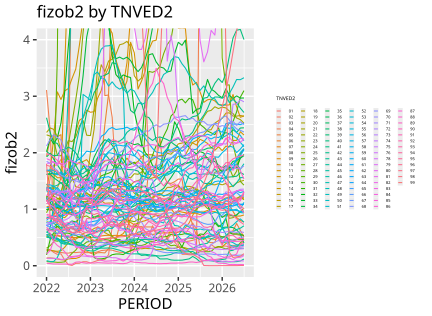
Как из таблицы сделать понятную историю на примере проекта «Национальная торговая статистика»
24 сентября 2026
Все пары графиков «хуже / лучше» построены на одних и тех же данных и в одних и тех же осях. Различается только оформление.
Между выгрузкой из базы и фразой «вот что происходит с торговлей» лежит работа, которую не выполняет ни один графический пакет (или ИИ).
| NAPR | PERIOD | STRANA | TNVED | EDIZM | STOIM | NETTO | KOL | SOURCE | TYPE |
|---|---|---|---|---|---|---|---|---|---|
| ИМ | 2024-06-01 | CN | 8402120000 | - | 69 794 | 2 | NULL | national | fact |
| ИМ | 2024-06-01 | CN | 8402900000 | - | 340 757 | 98 933 | 0 | national | fact |
| ИМ | 2024-06-01 | CN | 8403101000 | - | 11 191 887 | 52 614 | NULL | national | fact |
| ЭК | 2019-01-01 | AD | 2208600000 | - | 6 380,6 | 1 380,0 | NULL | comtrade | fact |
| ИМ | 2019-01-01 | AD | 4202210000 | - | 1 188,8 | 12,9 | NULL | comtrade | fact |
| ИМ | 2024-01-01 | GE | 2204210000 | ЛИТР | 13 272 667 | 5 047 930 | 5 047 930 | comtrade | fact |
| ЭК | 2026-07-01 | IN | 2709001000 | - | 6 485 607 679 | 11 530 164 600 | NULL | nowcast | pred |
Семь строк из unified_trade_data. Вопрос залу: что здесь происходит с российской торговлей - она растёт или падает?
В таблице не читают, а ищут, и для поиска нужно заранее знать, что искать.
Глаз хорошо оценивает длину, положение и направление, но плохо - числа. Визуализация переводит данные из первого режима во второй.
Отсюда простое следствие: график отвечает на вопрос «что происходит», таблица - на вопрос «чему равно». Обе формы нужны, и подменять одну другой не стоит.
Порядок здесь существенный. Большинство неудачных графиков - это четвёртый шаг, сделанный без первых трёх.
Рабочая формулировка содержит объект, метрику, период и базу сравнения. Всё, чего в ней не хватает, вы додумаете за читателя.
| Вопрос звучит как… | Что показываем | Форма |
|---|---|---|
| Как менялось со временем | динамику одной или нескольких величин | линия, площадь |
| Кто больше, кто меньше | сравнение категорий между собой | отсортированные горизонтальные столбцы |
| Из чего это состоит | вклад частей в целое | столбцы с накоплением |
| Связано ли одно с другим | две величины по одним объектам | точечная диаграмма |
| Чему равно вот это конкретно | точные значения, которые будут копировать | таблица |
Последняя строка не менее важна, чем остальные. Если читателю нужно точное число, чтобы перенести его в отчёт, таблица быстрее и честнее графика.
Как менялась стоимость импорта из Китая в долларах с 2024 года?
SELECT PERIOD, TNVED2, SUM(STOIM) AS import_usd -- TNVED2 / TNVED4 / TNVED6 / TNVED
FROM unified_trade_data
WHERE STRANA = 'CN' AND NAPR = 'ИМ' AND TYPE = 'fact'
AND PERIOD >= DATE '2024-01-01'
GROUP BY 1, 2| Уровень | Кодов в срезе | Строк в ответе | Сумма импорта | Что с этим можно делать |
|---|---|---|---|---|
| ТН ВЭД-2 | 98 товарных групп | 2 999 | 292,2 млрд $ | помещается на один график |
| ТН ВЭД-4 | 1 100 позиций | 29 456 | 292,2 млрд $ | уже только таблица |
| ТН ВЭД-6 | 4 455 субпозиций | 108 539 | 292,2 млрд $ | только поиск по коду |
| полный код | 6 777 позиций | 152 150 | 292,2 млрд $ | это выгрузка, а не срез |
Ответить можно на четырёх уровнях детализации: запрос отличается одним словом, а сумма импорта во всех четырёх случаях одна и та же. Меняется только подробность разбивки, поэтому уровень выбирают под то, что читатель способен удержать: 98 групп можно обсудить вслух, 6 777 кодов - только искать в них нужную позицию.
как получается по умолчанию

Формально показаны все 98 групп. Практически не читается ни одна, а легенда занимает треть площади.
после выбора истории
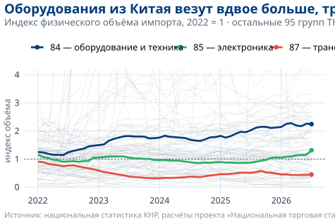
Те же 98 групп и та же ось. Три линии вынесены вперёд, остальные оставлены фоном: контекст сохранён, а история появилась.
Изменились три вещи: остальные 95 групп обесцвечены, но не удалены; названия стоят рядом с линиями, а не в легенде; пунктир на уровне единицы задаёт базу сравнения.
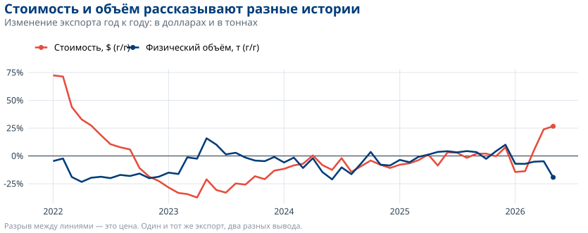
В 2022 году экспорт вырос на 70% в долларах и одновременно сократился в тоннах. Оба числа верны. Пока метрика не выбрана, у вопроса «выросла торговля или упала» нет ответа.
Единицы измерения внутри товарной группы 27 (топливо), поле KOL:
| EDIZM - единица измерения | строк | SUM(KOL) |
|---|---|---|
| КУБИЧЕСКИЙ МЕТР | 756 | 1 028 176 278 890 |
| ЛИТР | 1 867 | 76 270 871 480 |
| 1000 КИЛОВАТТ-ЧАС | 706 | 54 257 753 |
| 1000 ЛИТРОВ | 158 | 5 549 015 |
| 1000 КУБИЧЕСКИХ МЕТРОВ | 30 | 46 664 880 |
| КВАДРАТНЫЙ МЕТР | 1 | 1 324 000 000 |
| ШТУКА | 33 | 5 391 568 |
| МЕТР | 1 | 9 007 |
SUM(KOL) по группе 27 складывает кубометры с киловатт-часами и квадратными метрами. SQL выполнит это и вернёт число; на графике оно будет неотличимо от осмысленного.
Нужной метрики в данных нет Стоимость в долларах есть всегда, но она смешивает цену и объём. Натуральные единицы есть, но несопоставимы между собой.
Как считаем Каждую позицию нормируем к её базовому периоду, агрегируем уже безразмерные величины, скользящее окно в 12 месяцев снимает сезонность.
Что это даёт Появляется ответ на вопрос «груза стало больше или меньше» - по любой стране и любому уровню ТН ВЭД. В TradeMap и Comtrade такого показателя нет.
Метрику не всегда выбирают из готовых, иногда её приходится построить. Это часть работы над графиком, а не отдельная математика до неё.
График, построенный на KOL, молча отбросит две трети торговли и никак этого не покажет. Пропуски вообще не видны на картинке: линия просто идёт ниже, и выглядит это как сокращение поставок.
Поэтому индекс в проекте считается на NETTO, а KOL используется там, где он заполнен. Перед тем как строить график, полезно отдельно посчитать, сколько строк отвалилось на выбранном срезе.
пирог
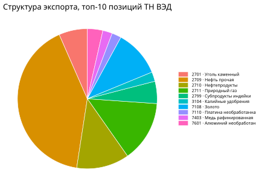
Сегменты 2,2%, 2,2% и 2,1% на глаз неразличимы, порядок алфавитный, а на каждый сегмент нужен отдельный взгляд в легенду.
столбцы
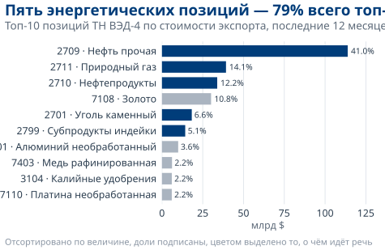
Длина сравнивается точнее угла, сортировка задаёт порядок чтения, доли подписаны, цветом выделено то, о чём идёт речь.
Пирог уместен, когда частей две-три и вопрос звучит как «больше или меньше половины». Десять сегментов - почти всегда ошибка.
итог
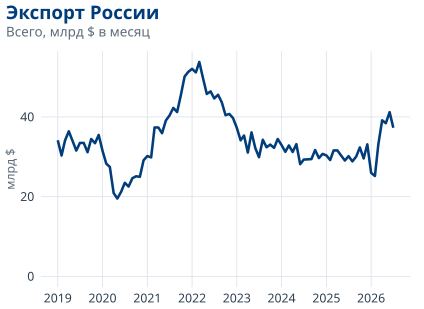
По этому графику вывод такой: в 2022 году был пик, затем спад, сейчас около 41 млрд долларов. Всё верно и мимо главного.
по странам-получателям
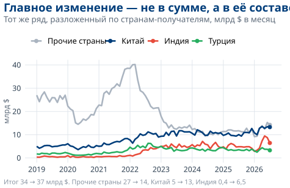
Те же числа в разбивке. Итог вырос на пятую часть, а состав торговли изменился полностью.
Практическое правило: увидели агрегат - разложите его хотя бы по одному измерению. Итоговая линия часто складывается из тенденций, которые гасят друг друга.
ось обрезана
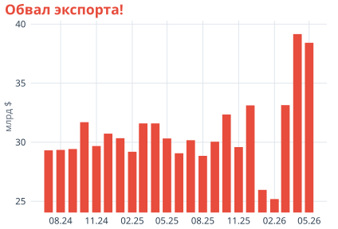
Ось начинается с 25 млрд долларов. Столбцы отличаются в разы визуально и наполовину фактически.
ось от нуля
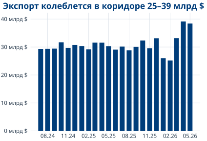
Те же числа. Снижение видно, но в реальном масштабе: как колебание внутри коридора, а не как обвал.
Столбцы читаются по длине, поэтому ноль на оси им нужен обязательно. Линия читается по наклону, и для неё обрезанная ось допустима, но тогда её следует подписать.
Цвет должен что-то означать Цвет ставят там, где он кодирует категорию, знак или акцент. Раскрашивать всё подряд - то же самое, что выделить жирным весь текст.
Больше пяти цветов не работают Человек надёжно различает пять-семь цветов, дальше начинается сверка с легендой. Остальное уводят в серый, в отдельные панели или в таблицу.
Проверка в градациях серого Около 8% мужчин не различают красный и зелёный, а проектор искажает цвета. График, который читается в чёрно-белом виде, читается везде.
В проекте это закреплено палитрой: синий МГИМО для основной линии, красный для акцента и отрицательных значений, зелёный для положительных, серый для контекста.
заголовок описывает
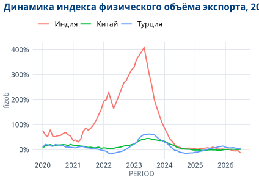
Заголовок пересказывает оси, три линии равноправны, названия рядов взяты из полей базы. Вывод предлагается сделать читателю.
заголовок объясняет
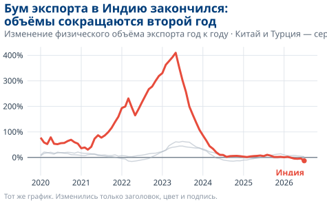
Те же данные и те же оси. Заголовок называет вывод, цвет ведёт к нему взгляд, подпись стоит там, куда читатель смотрит.
Проверка простая: закройте график и прочитайте один заголовок. «Динамика показателя за период» этот тест не проходит.
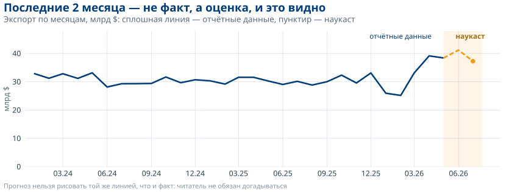
Таможенные данные приходят с лагом, поэтому последние месяцы в базе - оценка модели, помеченная флагом TYPE = 'pred'. На графике эта пометка должна быть видна: другой цвет, пунктир, подсветка области.
Прежде чем данные попадут на график, их нужно получить. На этом этапе нас ждало несколько неожиданностей, о которых стоит рассказать отдельно.
Китай Портал таможенной службы закрыт капчей, которую приходится решать вручную. Сбор устроен как полуавтомат: скрипт открывает браузер, оператор заполняет форму и скачивает файл, дальше обработка идёт сама.
Выгрузку легко получить в юанях вместо долларов, поэтому валюта проверяется отдельно.
Индия Открытого API нет, есть форма с CSRF-токеном, который нужно получать отдельным запросом. Ответ приходит HTML-страницей и разбирается парсером.
Стоимость в долларах, стоимость в рупиях и количество - три независимых запроса, результаты склеиваются по коду товара.
Турция Данных как файла нет вообще: они живут внутри BI-дашборда, а его движок закрыт от всего, что не браузер. На любой обычный запрос шлюз отвечает одинаковой заглушкой.
Сбор идёт через настоящий Chromium: дожидаемся загрузки дашборда и спрашиваем данные у движка напрямую, минуя интерфейс. Кликать по кнопкам нельзя, такой сбор разваливается при первом изменении вёрстки.
Направление торговли у всех трёх источников приходится зеркалить: экспорт Китая в Россию это российский импорт, и ошибка здесь переворачивает картину целиком. А у Турции в источнике две системы учёта, и брать нужно ту, по которой считает Comtrade: если их смешать, двусторонние итоги разъедутся на несколько процентов, и на графике это никак не проявится.
Индийская база возвращает структуру таблицы и для тех месяцев, которые ещё не опубликованы: строки на месте, суммы нулевые. Формально ответ корректен, и без проверки такой месяц попал бы в базу как месяц с нулевой торговлей.
На графике это выглядело бы не как отсутствие данных, а как обвал поставок до нуля с последующим восстановлением - то есть как содержательный экономический сюжет.
Сейчас перед записью проверяется сумма по месяцу: если STOIM и KOL в сумме дают ноль, месяц не сохраняется. Проверок такого рода в пайплайне около десятка, и почти каждая появилась после разбора конкретной странности в данных.
Comtrade принимает параметр maxRecords, который ограничивает размер ответа. Признака обрезки в ответе нет, а поле count содержит число возвращённых строк, а не действительное их количество.
С исходным лимитом в 50 000 строк экспорт Германии упирался в потолок в 38 парах «страна-месяц». За февраль 2020 года в файл попало ровно 50 000 строк при фактических 61 078 - потери около 18% без единого сообщения об ошибке.
Диагностика оказалась простой: искать месяцы, где число строк в точности равно лимиту. Сейчас лимит 250 000, а совпадение с ним трактуется как обрезка - пачка делится пополам и запрашивается заново.
| Месяц | Стран в нашем файле | Доступно в источнике | Пересмотрели после загрузки |
|---|---|---|---|
| июнь 2019 | 119 | 129 | 1 |
| июнь 2023 | 120 | 120 | 9 |
| июнь 2025 | 68 | 95 | 51 |
Страны досылают и правят отчётность годами. Январь 2024 года у Андорры впервые опубликован в феврале 2024-го, а последний раз правился в августе 2026-го.
Привычное правило «перекачивать последние N месяцев» здесь не работает: глубина пересмотра разная от месяца к месяцу, а пропуски встречаются и в данных 2019 года. Пришлось хранить рядом с выгрузкой манифест: по каждому месяцу - какие страны в нём есть и какая у их данных контрольная сумма.
Китай в одном из скриптов записывался кодом CH, а в другом - CN. В справочнике Comtrade CH - это Швейцария.
При сборке базы действует правило: если по стране есть национальная статистика, данные Comtrade по ней не берутся. Из-за расхождения в коде из выгрузки исключалась Швейцария, а Китай не исключался, и китайские данные попадали в базу дважды - из национального источника и из Comtrade.
На графике удвоение не выглядит как ошибка: линия просто идёт выше. Заметить это можно только сверкой с внешним источником или проверкой на уровне данных - поэтому в проекте есть отдельный набор тестов качества, которые считают такие вещи после каждой пересборки.
Ни одна из перечисленных проблем не оставляет следа на картинке. Обрезанный ответ, неопубликованный месяц, задвоенная страна, перепутанное направление - всё это даёт нормально выглядящую линию, которая идёт не туда.
Поэтому вопрос «откуда взялась эта цифра» - не бюрократическая формальность, а часть работы с визуализацией. В базе у каждой записи хранится источник (SOURCE) и тип (TYPE), а сборка сопровождается тестами качества.
Практический вывод для аналитика: прежде чем объяснять необычное движение на графике экономическими причинами, стоит проверить, не объясняется ли оно способом сбора данных.
Отдельный хороший график - разовый результат. Бизнес-аналитика начинается там, где он воспроизводится каждый месяц без участия автора.
Второй уровень из этой лестницы у нас уже работает: ежемесячный выпуск по каждой из трёх стран, три страницы А4, пересборка одной командой.
Торговля с Китаем, из свежего выпуска
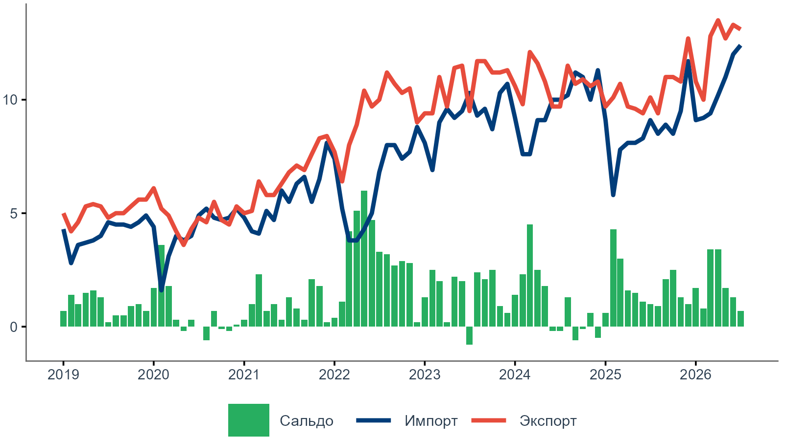
Что внутри
Третья страница появилась не сразу. Выпуск читают не только экономисты, и без неё половина показателей оставалась непонятной.
Собирается само Цифры месяца, изменения к прошлому месяцу и к прошлому году, все четыре графика, вёрстка страниц, доля наукаста в оценке. Выпуск пересобирается одной командой, когда приходят новые данные.
Это ровно те четыре шага, которые мы разбирали: срез, метрика, форма и даже заголовок.
Не делает никто Фразы во врезках «Главное» стоят в шаблоне: «в основном энергоносители», «импорт растёт быстрее». Они верны, пока общая картина не изменилась, но никто не переписывает их каждый месяц.
И ни одна из них не отвечает на вопрос, почему конкретная цифра сдвинулась именно сейчас.
Получается корректный отчёт, в котором нет ни одного собственного наблюдения. Пятый шаг, смысл, программа за автора не делает.
| Отчёт, бюллетень | Дашборд | |
|---|---|---|
| Задача | рассказать историю | дать возможность найти свою |
| Автор вывода | аналитик | читатель |
| Порядок чтения | задан автором, сверху вниз | произвольный, от фильтра |
| Сколько вопросов | один-два, раскрытых глубоко | класс похожих вопросов |
| Заголовки | содержательные: «экспорт сменил адрес» | нейтральные: «экспорт по странам» |
| Частота | выпуск раз в месяц | работает постоянно |
| Типичная неудача | простыня графиков без вывода | тридцать чартов и ни одного фильтра |
Распространённая ошибка - сделать отчёт и назвать его дашбордом: набор статичных графиков с выводами в заголовках, по которому нельзя построить ни одного собственного среза.
Внешняя торговля РФ - пять вкладок поверх одной таблицы. Открывается по адресу инстанса, доступ выдаётся отдельно.
| Вкладка | На какой вопрос отвечает | Чем показано |
|---|---|---|
| Обзор | что со стоимостью и объёмом торговли в целом | итог за 12 месяцев, помесячная динамика, наукаст |
| География | как торговля распределена по странам | области в долларах и в килограммах |
| Продукты | какие товарные группы дают основной объём | treemap по ТН ВЭД и таблица |
| Покрытие | по каким странам и периодам данные вообще есть | матрица покрытия |
| Физобъемы | больше или меньше стало груза | индексы по странам и группам |
Дашборд построен не на самой unified_trade_data, а на представлении unified_trade_data_enriched: в нём к каждой строке уже присоединены русские названия страны и товарного кода. Иначе читателю пришлось бы работать с CN и 8403101000 вместо «Китая» и «котлов центрального отопления».
панель фильтров дашборда
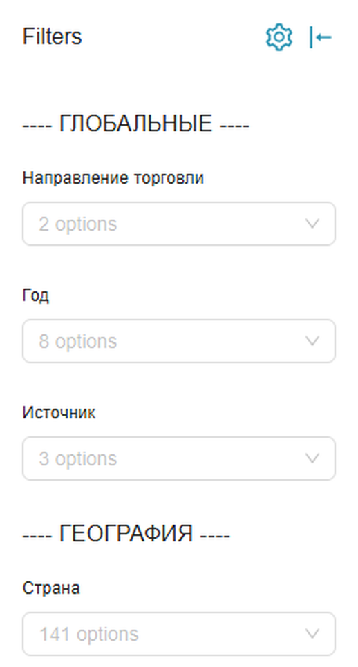
что за ними стоит
| Фильтр | Значений |
|---|---|
| Направление торговли | 2 |
| Год | 8 |
| Источник | 3 |
| Страна | 141 |
| ТН ВЭД - 2 знака | 98 |
| ТН ВЭД - 4 знака и полный код | списком с поиском |
| Поиск по названию товара | по-русски |
| Единица измерения | 25 |
Это тот же второй шаг, который в первой части делался запросом: выбор строк и уровня детализации. Разница в том, кто его делает. В отчёте срез выбирает автор; в дашборде - читатель, а автор отвечает за то, чтобы любой разумный срез не сломал ни один график.
flowchart LR
A["Китай · Индия · Турция<br/>национальная статистика"] --> C
B["UN Comtrade<br/>138 стран"] --> C
C[("unified_trade_data<br/>DuckDB · 7,4 млн строк")]
C --> D["Бюллетень<br/>Quarto"]
C --> E["Дашборд<br/>Superset"]
C --> F["API и Excel"]
classDef plain fill:#ffffff,stroke:#8a95a3,stroke-width:1px,color:#2c3e50
class A,B,D,E,F plain
style C fill:#ffffff,stroke:#003d7a,stroke-width:2px,color:#003d7a
Три выхода собраны из одной таблицы. Различает их не источник данных, а ответ на вопрос, кто читает и какое решение принимает.
График в файле Что происходит через месяц:
График в коде Что даёт воспроизводимость:
Графики этой презентации собраны из site/data/*.parquet во время рендера: команда quarto render - и цифры в них соответствуют текущему состоянию базы.
Три запроса к базе и то, что из них получается. Всё, что нужно, - SQL и десяток строк на R.
запрос
результат
| STRANA | import_bn |
|---|---|
| CN | 119,7 |
| DE | 7,4 |
| TR | 6,7 |
| KZ | 5,7 |
| IN | 4,3 |
| IT | 3,5 |
| UZ | 2,8 |
| CH | 2,7 |
Импорт из Китая на порядок больше, чем из любой другой страны: столбчатая диаграмма по этим восьми строкам будет состоять из одного столбца и семи чёрточек. Это случай, когда таблица информативнее графика, а на график имеет смысл выносить только вторую восьмёрку.
И обратите внимание на последнюю строку: CH здесь - Швейцария, та самая, из-за которой китайские данные однажды попали в базу дважды.
запрос
результат
| SOURCE | rows | netto | kol |
|---|---|---|---|
| comtrade | 5 083 529 | 99,1% | 32,6% |
| national | 1 383 855 | 66,8% | 32,3% |
Вес нетто заполнен у 99% строк Comtrade и только у 67% строк национальных источников. Это значит, что один и тот же индекс, посчитанный по данным разных источников, опирается на разную полноту, и сравнивать их напрямую нельзя.
Такой запрос стоит выполнять до построения графика, а не после того, как график покажет что-то странное.
запрос и десять строк на R
ex <- dbGetQuery(con, "
SELECT PERIOD, SUM(STOIM) / 1e9 AS export_bn
FROM unified_trade_data
WHERE STRANA = 'CN' AND NAPR = 'ЭК'
AND TYPE = 'fact'
AND PERIOD >= DATE '2022-01-01'
GROUP BY PERIOD ORDER BY PERIOD")
ggplot(ex, aes(PERIOD, export_bn)) +
geom_line(linewidth = 1.2, colour = "#003d7a") +
scale_y_continuous(limits = c(0, NA)) +
labs(title = "Экспорт в Китай:
около 12 млрд $ в месяц",
x = NULL, y = "млрд $") +
theme_minimal()результат
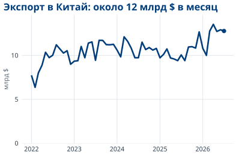
Между выгрузкой и графиком здесь нет ни одного промежуточного файла: запрос возвращает 55 строк, они сразу же рисуются. Заголовок написан руками - это тот самый пятый шаг, который не делает за вас ни один пакет.
Понятная история - это цепочка решений о том, что показать, чем измерить и что назвать главным. Графический пакет выполняет только последний шаг.
В бюллетене по Китаю четырнадцать товарных категорий, и почти каждая строка это вопрос без ответа.
Вопросы из последнего выпуска За 12 месяцев в экспорте в Китай:
Почему выросли именно концентраты, а не рафинированная медь? Это разовые поставки или смена структуры?
Что предлагаем Разбирать такие случаи по одному и писать короткий содержательный комментарий к выпуску. Начать можно с одной категории и одной страны.
Даём доступ к базе, к дашборду и к выгрузкам, показываем, как устроен пересчёт. Комментарий выходит за вашей подписью в составе выпуска.
Задача не учебная: бюллетень читают за пределами университета, и от того, есть ли в нём живой разбор, зависит, читают ли его вообще. Если интересно, напишите: m_salihov@fief.ru.
Национальная торговая статистика База данных · API · бюллетень · дашборд
Национальная торговая статистика · МГИМО